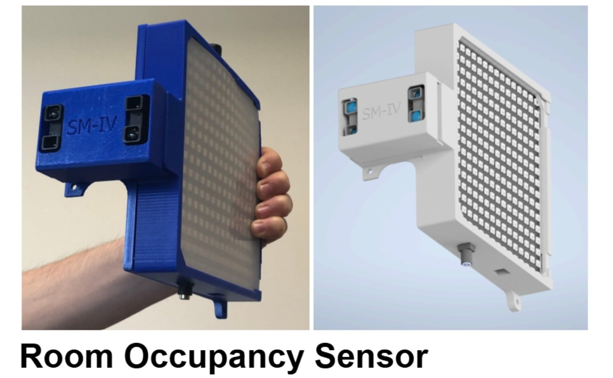

Project Overview

My team and I designed and prototyped a device that can keep track of the number of people at all times currently in a room, display that value as people enter and display the status of the room capacity using a color code. Below is a detailed video of how this works.
Below you can see the demostration and explanation.
I tested and integrated all electronic components and programmed the Arduino to ensure seamless system operation.